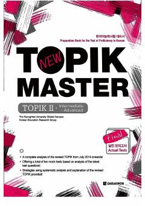

TMKoreys tili TOPIK II imtihoniga tayyorgarlik ko'rish uchun amaliy qo'llanma.
Mazkur kitob koreys tilini bilish darajasini aniqlovchi yangi formatdagi TOPIK II imtihoniga tayyorgarlik ko'rish uchun mo'ljallangan. Qo'llanmada sinov imtihonlari tahlili, strategiyalar va o'nta amaliy mock testlar taqdim etilgan.